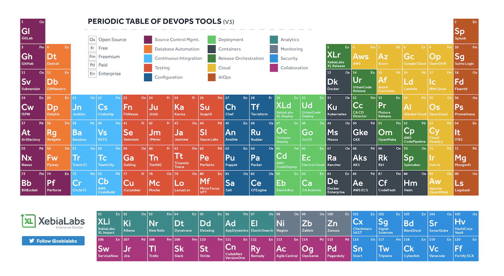

- 00 开篇词 从默默无闻到风靡全球，DevOps究竟有什么魔力？.md.html
- 01 DevOps的“定义”：DevOps究竟要解决什么问题？.md.html
- 02 DevOps的价值：数字化转型时代，DevOps是必选项？.md.html
- 03 DevOps的实施：到底是工具先行还是文化先行？.md.html
- 04 DevOps的衡量：你是否找到了DevOps的实施路线图？.md.html
- 05 价值流分析：关于DevOps转型，我们应该从何处入手？.md.html
- 06 转型之路：企业实施DevOps的常见路径和问题.md.html
- 07 业务敏捷：帮助DevOps快速落地的源动力.md.html
- 08 精益看板（上）：精益驱动的敏捷开发方法.md.html
- 09 精益看板（下）：精益驱动的敏捷开发方法.md.html
- 10 配置管理：最容易被忽视的DevOps工程实践基础.md.html
- 11 分支策略：让研发高效协作的关键要素.md.html
- 12 持续集成：你说的CI和我说的CI是一回事吗？.md.html
- 13 自动化测试：DevOps的阿克琉斯之踵.md.html
- 14 内建质量：丰田和亚马逊给我们的启示.md.html
- 15 技术债务：那些不可忽视的潜在问题.md.html
- 16 环境管理：一切皆代码是一种什么样的体验？.md.html
- 17 部署管理：低风险的部署发布策略.md.html
- 18 混沌工程：软件领域的反脆弱.md.html
- 19 正向度量：如何建立完整的DevOps度量体系？.md.html
- 20 持续改进：PDCA体系和持续改进的意义.md.html
- 21 开源还是自研：企业DevOps平台建设的三个阶段.md.html
- 22 产品设计之道：DevOps产品设计的五个层次.md.html
- 23 持续交付平台：现代流水线必备的十大特征（上）.md.html
- 24 持续交付平台：现代流水线必备的十大特征（下）.md.html
- 25 让数据说话：如何建设企业级数据度量平台？.md.html
- 26 平台产品研发：三个月完成千人规模的产品要怎么做？.md.html
- 27 巨人的肩膀：那些你不能忽视的开源工具.md.html
- 28 迈向云端：云原生应用时代的平台思考.md.html
- 29 向前一步：万人规模企业的DevOps实战转型案例（上）.md.html
- 30 向前一步：万人规模企业的DevOps实战转型案例（下）.md.html
- 期中总结 3个典型问题答疑及如何高效学习 (1).md.html
- 期中总结 3个典型问题答疑及如何高效学习.md.html
- 期末总结 在云时代，如何选择一款合适的流水线工具？.md.html
- 特别放送（一）成为DevOps工程师的必备技能（上）.md.html
- 特别放送（三）学习DevOps不得不了解的经典资料.md.html
- 特别放送（二）成为DevOps工程师的必备技能（下）.md.html
- 特别放送（五）关于DevOps组织和文化的那些趣事儿.md.html
- 特别放送（四）Jenkins产品经理是如何设计产品的？.md.html
- 结束语 持续改进，成就非凡！.md.html
- 捐赠
特别放送（四）Jenkins产品经理是如何设计产品的？
你好，我是石雪峰。这是一期临时增加的特别放送。
前两天，我去葡萄牙里斯本参加了2019年的DevOps World | Jenkins World大会。这是一年一度的社区聚会，参会人会围绕Jenkins和DevOps展开为期3天的密集交流，信息量非常大。很多新技术、行业趋势、产品设计思路都在大会上涌现了出来，我觉得非常有价值，也很有必要整理出来，分享给你。
2019年是Jenkins诞生15周年，对于任何一个软件来说，15年都不是一个短暂的时间。在这个时间点，社区也在展望过去15年来的Jenkins发展历程，并憧憬下一个15年Jenkins的变化。
可以说，从DevOps产品的角度来说，Jenkins本身就是一个非常出色的典型案例。
最开始，这是一个由于Jenkins创始人KK无法忍受同事天天导致编译失败而开发的一个人项目。到今天，这个项目已经有将近900名或全职、或兼职的贡献者，26万多个Master节点，超过3000万个任务了。这些数字还仅仅是官方可以统计到的部分，如果再加上企业内网、个人电脑上的实例，那就更加不计其数了。
今年，我印象最深刻的是，Jenkins创始人KK并没有在主会场上讲太多的产品细节、设计思路、发展方向等，而是仅仅用了10多分钟回顾了自己的心路历程。在演讲的最后，他将舞台交给了一位Jenkins产品经理。这位产品经理是何方神圣呢？为什么是一位产品经理来讲这些内容呢？这激起了我极大的好奇心。
一直以来，KK都被视为Jenkins的头号产品经理。的确，技术专家兼产品经理是比较普遍的一个现象。这是因为，与普通面向用户的产品相比，DevOps产品有几个非常鲜明的特征。
- 技术背景要求高。因为DevOps产品要解决的很多问题都是一线的技术问题；
- 面向的用户是开发人员。这就意味着，如果你不了解开发的真实工作方式，就很难设计出开发友好的产品；
- 专业工具繁多。产品引用到的开源组件和工具都是专业领域的内容，比如Jenkins就是一个典型的持续集成系统，如果你不了解Jenkins，又怎么设计Jenkins呢？
在几天的会议过程中，针对DevOps产品经理面对的这些挑战，我专门跟这位神奇的Jenkins产品经理进行了沟通。他就是Jeremy Hartley，一个来自荷兰的大哥。
我先给你介绍下社区的运作方式。以Jenkins这个产品为例，它背后的主要贡献者都来自于CloudBees公司。虽然这些人都属于同一个公司，但实际上，他们大多各自分散在家办公，一年到头也见不了几次面。
比如，产品经理Jeremy在荷兰，创始人KK在加州，基础设施的负责人Oliver在比利时，K8S的插件维护者在西班牙。因此，每年的FOSDEM（年初的欧洲最大的开源软件大会），以及年末的Jenkins World大会，就成了这些世界各地的开发者汇聚到一起的难得机会。
言归正传，与产品经理的积极外向、滔滔不绝的一般形象不同，Jeremy可以说是一个异类。他从始至终都给人一种温文尔雅的感觉，甚至在公开演讲的时候，他的语气也非常平和，没有太多的情绪表达，只是把他和他的产品的故事娓娓道来。
Jeremy早先在一家互联网在线视频公司干了10年。他半开玩笑地说，即便干了10年，也不如跟腾讯合作一个项目来得出名。后来，他加入XebiaLabs。这是一家专门做DevOps平台产品的公司，在国内可能不是特别出名，但如果提到DevOps工具元素周期图，相信你肯定听说过，这就是这家公司迭代更新的。

在今年的4月份，他加入了CloudBees，成为了主管开源和商业版本Jenkins的高级产品经理。在跟他交流的过程中，我对产品经理这部分内容的印象非常深刻。我梳理了一些要点，分享给你。如果你已经是DevOps产品经理，或者是立志要成为DevOps产品经理的话，你一定要认真看一下。
一、自我颠覆
什么叫自我颠覆呢？我给你举个例子。比如，Jenkins的用户UI项目Blue Ocean，很多人应该都知道，目前这个项目的主要开发已经停止了。社区仍然会修复缺陷和安全漏洞，也会接受开发者共享的PR，但是不会再投入专职工程师进行开发工作了，新需求也都处于无限暂停的状态。
实际上，不仅仅是Blue Ocean，去年Jenkins大会上星光闪耀的项目，比如Five super power、Jolt in Jenkins、Evergreen等项目，也都因为方向调整和人员变动而处于半终止、暂缓开发的状态。那么，为什么在短短一年的时间内，会有这么大的颠覆性变化呢？我把这个问题抛给了Jeremy。
他的观点是，这些项目并非没有意义，但是确实没有达到项目原本的预期。对于产品经理来说，管理预期是一项非常重要的能力。当需求走到产品经理的时候，做哪个、不做哪个经常是个问题。团队往往会进行协商，挑选出来最有希望的项目，但这并不代表这些项目注定会成功。相反，很多想法只有做了才知道是不是靠谱，用户是不是买单。如果使用场景有限，又没有很好的增长性，及时叫停反而是一种好的选择。
Blue Ocean项目诞生之初，可以说是让人眼前一亮，充满期待，甚至一度和Jenkins流水线一起被视为2.0版本的最大功能。但是几年之后，由于产品性能、插件扩展支持等种种原因，真正在企业中大规模使用的机会并不多。正因为项目没有达到预期，产品团队就决定停止这个项目。
但是与此同时，全新的Jenkins用户界面项目已经被提到了日程表中。这个全新的用户界面大量借鉴了Blue Ocean的设计思路，并最终通过一套用户界面，取代了现有的Blue Ocean。我想，正是这种不断的自我颠覆，才让一个15年的软件始终保持着活力和创新力。
二、化繁为简
对于Jenkins这样的产品来说，很多插件都是开发者提供的，但是开发者往往倾向于追求功能的全面性，这从很多插件的设计中就能看出来。
开发者不加筛选地把所有功能都罗列在用户面前，自然是得心应手。但是，对普通用户来说，当他第一眼看到这个复杂产品的时候，他的使用意愿就会大打折扣。
另外，面对这么多的插件，从表面上看，用户好像有很多选择，但是，有些插件的名字长得差不多，你并不知道哪个能用。或者，有些插件适用于当前的Jenkins版本，但是一旦Jenkins升级，它们就无法正常使用了。但是，用户在升级之前并不知道是否适配，往往是在升级完成之后才会发现问题，只能再进行版本回滚。类似这些插件使用中的问题，都给用户带来了很大的使用障碍。
在探讨这个问题的时候，Jeremy也认为，系统过于复杂有悖于产品设计的初衷，但是，作为一个公开的平台，他们并不能约束开发者的行为，所以就需要一种方法来平衡功能的全面性和功能的易用性。
比如，在重新考虑Jenkins插件生态的时候，一方面，产品团队会针对全新的业务场景提供官方的插件支持。举个例子，在云原生开发场景下，通过和云服务商深度合作，提供更多的官方插件，来满足典型的云服务商的使用场景。无论是对亚马逊的AWS、微软的Azure，还是未来国内的主流云服务商，他们都会通过这种方式来进行合作。无论你使用的开源产品，还是商业产品，都能通过这个项目来获得收益。
另一方面，产品团队也会进一步对现有的1600多款插件进行分类，并将其中的一部分插件纳入CloudBees的保障项目之下。这就意味着，将由CloudBees公司来保证这类插件的兼容性和可用性。对于专业用户来说，他们依然可以按照自己的方式自由地选择和开发插件，而对于普通用户来说，官方推荐的插件集合就足够了。
不仅仅是插件，产品的易用性体现在产品设计的方方面面。凡是阻塞用户使用的问题，都是需要优先解决的。
比如，对于一个10多年的产品来说，历史积累的文档数量巨大，很多时候，用户都无法找到真正有用的信息。所以，Jenkins产品团队启动了一个文档治理的项目，会重新梳理所有文档，并把它们迁移到GitHub平台上。另外，他们还会结合新的产品功能，整理出最佳实践。比如，对于流水线使用来说，官方也总结了很多最佳实践供入门者参考，你可以结合前面两讲的内容一起学习。
要始终记得，不要让你的产品只有专家才会使用。将复杂的问题简单化，是产品经理不论何时都要思考的问题。
三、退后一步
DevOps的产品经理大多是技术人员出身，因此会特别容易一上来就深入细节，甚至是代码实现的细节。
Jeremy同样也是程序员出身，他做过很长一段时间的前端开发。当我问他“一个好的产品应该如何平衡用户视角和实现视角”的时候，他给我的回答是，要尽量退后一步来看问题。
退后一步，就是说不要把关注点只聚焦在问题表面，而是要尽量站在旁边，以第三方的视角来全面审视问题。
他举了个Jenkins的流水线即代码的例子。在实际使用的时候，流水线文件中经常会有大量的代码，有时候，流水线代码甚至会有上千行。代码越多，系统的不稳定因素就越多，测试起来也越麻烦。同时，按照现有的运行机制来说，很多代码都是运行在master节点上的，这就给集群的master节点带来了很大压力。
要想解决这个问题，从实现的角度出发，就是提供一种标准化、结构化的语法格式，也就是声明式流水线语法，以此来降低流水线的编写难度，减少流水线代码量，并且让这个代码结构更加清晰。但是，这些优化依然不能解决集群master节点压力过大的问题，这就相当于问题只看了一部分。
退后一步来看，这就需要一种全新的视角，来提升流水线整体的隔离性。所以，产品团队目前就在设计一种新的流水线组件 building block，也就是构建块。
所谓构建块，是指一整块的代码片段，而不是一条条独立的指令。这些构建块结合到一起，就可以满足一个具体场景的问题。比如Maven打包构建的场景，构建块可以帮你解决环境、工具、构建命令等一系列问题。这些构建块以代码形式在子节点上运行，既降低了流水线的编写难度，也缓解了master节点上的压力。对用户来说，使用构建块也更为简单，可以直接把它放在自定义的步骤中执行。
对于产品经理来说，找到方案、解决问题自然是职责所在，但与此同时，他们往往需要同时保有两种思维，即用户思维和实现思维。能够在这两种思维之间自由切换，是产品经理走向成熟的标志。
总结
说到这儿，我来回答一下最开始的那个问题，也就是“为什么是产品经理来分享产品的规划呢？”这是因为，无论要开发一个多大还是多小的产品，都需要有这样一拨人来退后一步，找到用户的真实问题，化繁为简，实现这个功能，并不断颠覆自己，持续打磨和改进。这对于任何一个想要解决更多人问题的产品来说，都是至关重要的。
思考讨论
关于这次Jenkins World大会，你还有什么希望进一步了解的内容吗？欢迎你积极提问，我会知无不言。
如果你觉得这篇文章对你有所帮助，也欢迎你把文章分享给你的朋友。
© 2019 - 2023 Liangliang Lee. Powered by gin and hexo-theme-book.